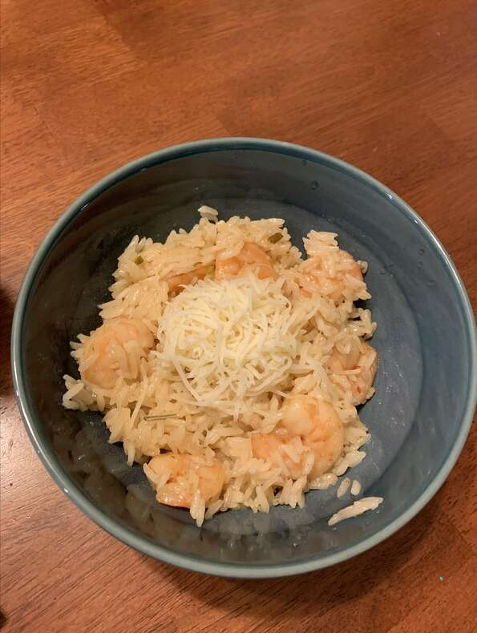

Shrimp risotto

Description
I promise you, cooking risotto is so much easier than you think it is… and shrimp risotto is the type of easy but impressive dish everyone needs in their repertoire. (You'll be making it all of the time once you realize!) Just saute some finely minced onion or shallot along with your Arborio rice in olive oil for about a minute, but don't brown it. Add a generous splash of white wine to your pan, and cook until the wine is absorbed. Turn down the heat so the liquid and rice are just simmering, not boiling hard.Then start adding either hot chicken stock or hot water, by the ⅓ cup, stirring until the liquid is absorbed. That's really all there is to risotto.
When the rice is almost done to your liking (approximately 16-18 minutes), add your shrimp. The shrimp will cook in moments. Take the risotto off of the heat, add at least one tablespoon of unsalted butter, some chopped parsley or basil, a bit of lemon zest, and serve immediately in hot bowls. You'll be the star of dinner, believe me.
Ingredients
- 2 pounds large shrimp in their shells
- 6 cups chicken stock
- 4 tablespoons olive oil, divided
- 3 cloves garlic, minced
- 4 tablespoons butter, divided
- 2 (12 ounce) packages Arborio rice
- 2 large shallots, diced
- ½ cup dry white wine
- 1 tablespoon chopped fresh rosemary
- 6 saffron threads, crumbled
- 2 cups grated Parmesan cheese
- 1 teaspoon lemon zest
- 1 teaspoon red pepper flakes
Steps
- Peel and devein shrimp, reserving shells. Heat stock in a large saucepan and add shells. Cover and simmer for 30 minutes.
- Chop shrimp into bite-sized morsels. Toss with olive oil and garlic; cover and refrigerate.
- Strain stock and discard shells. Keep warm on low heat.
- Melt 2 tablespoons butter and 2 tablespoons olive oil in a heavy saucepan over low heat. Add shallots; cook until softened, but not browned, about 4 minutes. Add dry rice and stir until each grain is coated and starts to turn translucent, about 3 minutes. Raise heat to medium. Add wine, stir and simmer until mostly evaporated, 3 to 5 minutes.
- Ladle 1/2 cup of warm stock into the rice mixture; stir constantly until stock is absorbed, 3 to 5 minutes. Add rosemary and saffron and another 1/2 cup of stock; stir until absorbed, about 3 minutes. Repeat with about 4 more cups of stock, 10 to 15 minutes. Add marinated shrimp to the remaining 1 cup stock; stir for 1 minute and pour mixture into the rice. Cook and stir until risotto is tender yet firm to the bite, 6 to 8 minutes more.
- Stir Parmesan cheese, lemon zest, red pepper flakes, and remaining 2 tablespoons butter into the risotto. Stir until creamy. Serve immediately in warmed bowls.